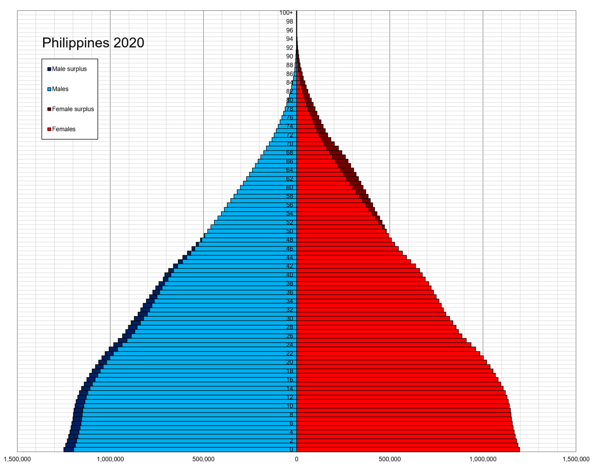

There are 7,641 islands that make up the archipelagic nation of the Philippines, which is further subdivided into 81 provinces and 17 regions. The country is most famous for its extensive biodiversity, which also serves as its primary draw for visitors. The nation's most popular tourist locations are the country's beaches, heritage cities and monuments, mountains, rainforests, islands, and diving spots.
Tourism in the Philippines can be traced back to ancient times, when the first group of people decided to migrate through land bridges. This was followed by other groups of migrations from the Malayan archipelago in the south and Taiwan in the north. These migrations brought new cultures to the Philippines, which led to the development of tourism. Arabs, Indians, Japanese, Chinese, and Malay people, together with members of other ethnic groups from the mainland of Southeast Asia, Taiwan, and the Ryukyu Islands, traded goods with the locals, which led to the development of the tourism business. As a result of the islands' incorporation into Spain's territory, there was a subsequent influx of Spanish people into the country; however, this influx was relatively minor in comparison to the Spanish migrations that took place in South America because of the Philippines' geographic distance from Spain. The inflow of immigrants from Europe and the United States was largely responsible for the tourism industry's initial true flourishing, which occurred throughout the late 19th and early 20th centuries. It received the moniker "Pearl of the Orient Seas" due to the fact that it was ranked highly among the most desirable nations to visit in Asia, alongside Hong Kong and Japan. The fall in the tourism industry during and after World War II resulted in the country having an economy that was entirely decimated and a landscape that was littered with heritage villages that had been destroyed. The second wave of tourists saw a boom in the 1950s but a precipitous decline during the time of the dictatorship. Following the People's Power Revolution, the tourism industry continued its descent due to the domino effect generated by the Marcos dictatorship. This drop began before the People's Power Revolution. Only in 1991 and 1992, when there were 1.2 million tourists in the Philippines, was the tourism industry able to keep up with demand. After ten years, it eventually died out as a result of unethical government actions. In the early part of the 2010s, the tourism industry began to flourish once more under the "It's More Fun in the Philippines" motto, which was considered as a global success. With the use of social media and a catchy tagline, the nation noticed an increase in the number of tourists visiting from other countries. 2015 marked the year that the highest number of arrivals of tourists from other countries ever recorded was 5,360,682. In 2017, the business continued to expand, but the growth rate from Western tourists was significantly lower than in previous years due to the ongoing drug war and the declaration of martial law in Mindanao. Despite this, the expansion persisted due to an increase in the number of tourists from Asia and Russia. From January through December of 2019, there were 8,260,913 visits from other countries, representing a 15.24% increase compared to the same time in 2018. These came from East Asia in the proportion of 58.62% (4,842,774), North America in the proportion of 15.84% (1,308,444), and other ASEAN nations in the proportion of 6.38% (526,832). The tourism industry was severely impacted by the COVID-19 pandemic, which occurred when tourist arrivals dropped to only 1.48 million in 2020 due to government pandemic-related lockdowns to control the spread of the virus [24] and when Super Typhoon Odette ravaged tourism-dependent remote islands, including Siargao, in the central and southern Philippines in December 2021. Siargao was one of the islands that was affected by Super Typhoon Odette. On February 10, 2022, after nearly two years of the border being closed owing to the COVID-19 pandemic, the country once again opened its doors to visitors from other countries.
The archipelago known as the Philippines is made up of 7,641 individual islands and has a total land area of 200,000 square miles (300,000 square kilometers). It occupies the sixth most extensive island nation in the globe. Ninety-five percent of the entire land area is distributed over the eleven biggest islands. Luzon, which has an area of around 105,000 square kilometers, is the biggest of these islands. Mindanao is around 95,000 square kilometers in size, making it the second biggest island. The archipelago may be found near Taiwan and Borneo and is approximately 800 kilometers away from the main continent of Asia. Luzon, the Visayas, and Mindanao are the three island groupings that make up the Philippine archipelago. Mindanao is the largest island. The islands that make up Luzon are known as Palawan, Mindoro, Marinduque, Masbate, Romblon, Catanduanes, Batanes, and Polillo. Luzon itself is one of these islands. The group of islands known as the Visayas may be found in the middle of the Philippine archipelago. The major of these islands include Panay, Negros, Cebu, Bohol, Leyte, Samar, Siquijor, Biliran, and Guimaras. In addition to the island of Mindanao itself, the islands of Mindanao include Dinagat, Siargao, Camiguin, and Samal. The Sulu Archipelago, which is mostly comprised of Basilan, Sulu, and Tawi-Tawi, is also included. Demographics 
The human population of the Philippines is recorded in the demography of the country, together with information on its density, ethnic composition, educational attainment, health, economic standing, religious affiliations, as well as other characteristics of the people. The average yearly growth rate of the Philippines' population between both the years 2015 and 2020 was 1.63 percent. Overall economy of the Philippines is expected to be 109,035,343 as of the census in the year 2020. In the year 1591, the Philippines conducted their very first census, during which they counted a total of 667,612 individuals. There are more lowland Austronesians in the Philippines than there are Aetas or other highland tribes, hence lowland Austronesians make up the bulk of the population. The indigenous people have family ties to the people who originally inhabited the islands that make up the Malay Archipelago. Some of the indigenous peoples who had been living in the Philippines for generations prior to the arrival of Spanish and American colonizers had become assimilated or intermixed with other ethnicities. There are around 600,000 Americans now residing in the Philippines. They make up 0.56% of the overall population in the world. Arabs, Japanese, Han Chinese, and Indians all make significant segments of the population and are each considered to be distinct ethnic groupings. Tagalog and Cebuano are the two indigenous languages that are spoken by the most people, with respective populations of 23.8 million and 16 million individuals (out of a total of 45 million speakers for Filipino). Additional 11 indigenous languages have at least one million native speakers: Ilokano, Hiligaynon, Waray, different Bikol languages, Kapampangan, Pangasinan, Maranao, Maguindanao, Kinaray-a, Zamboangueño and Tausug. Over ninety-three percent of the total population speaks one or more of these languages as their mother tongue. Although Filipino and English are the country's official languages, there are anywhere from 120 to 170 unique indigenous languages spoken across the Philippines.
Traditional Filipino traditions and Spanish Catholic practices, together with influences from the United States of America and other regions of Asia, combine to form the foundation of Philippine culture. The Filipino people have a deep passion for art, fashion, music, and food, and they place a strong emphasis on the importance of family. People from the Philippines are known for their warmth and willingness to make others feel at home. This often involves having everyone in the same room together just to sing, dance, and feast. The yearly schedule is jam-packed with numerous festivals, many of which mix costumes and rituals from the nation's pre-Christian past with the beliefs and philosophy of the Catholic church in the current day.